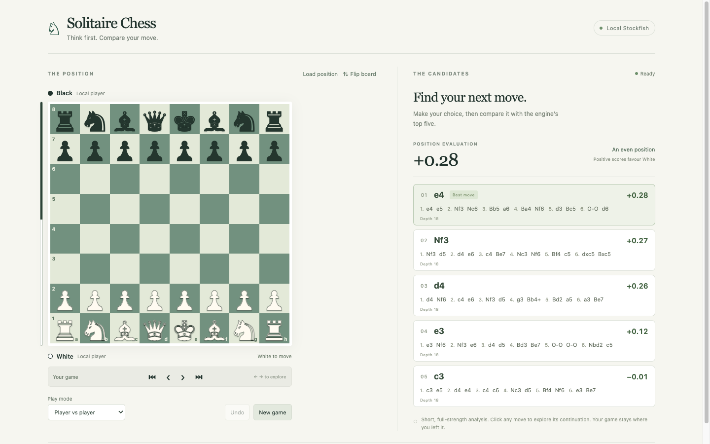

Play your game
Choose Player vs player for local play, or Player vs computer, then choose your colour and approximate opponent Elo. Click or drag a piece to move. Flip the board whenever you like.
SOLITAIRE CHESS FOR MAC AND LINUX
Play a game, see the position’s evaluation, and explore up to five Stockfish continuations. Everything runs on your Mac.
Get help or report a problemA GitHub account is needed to post. Reports are public; please leave out private information.

The MIT-licensed Linux edition is available as a Debian package for Intel/AMD and ARM laptops. Install instructions, source and downloads are on GitHub. Stockfish is installed through your distro’s package manager.
GETTING STARTED
Choose Player vs player for local play, or Player vs computer, then choose your colour and approximate opponent Elo. Click or drag a piece to move. Flip the board whenever you like.
The right-hand panel analyses the live position. Positive scores favour White; negative scores favour Black. Scores are measured in pawns. “M” denotes a forced mate found by the engine.
Click a candidate move or continuation to preview its line. Use the arrow controls to step through it. Choose Return to game or press Escape to leave the preview.
Use Load position to enter FEN. Your game, playing mode, orientation, and computer strength are saved locally and restored when you reopen the app.
Analysis normally completes within a few seconds. Changing position starts a fresh search. If the engine remains unavailable, quit and reopen the app, then report the message you see.
Check that you selected Player vs computer and that it is the computer’s turn. Leave variation preview or history review to return to the live game. Also check whether the game has ended.
Engine lines are estimates from a limited search. They are helpful candidates, not a guarantee. The computer opponent’s Elo is approximate, and reducing its strength does not reduce the analysis engine’s strength.
Tell us your operating system and version, app version, what happened, and what you expected. Include a FEN position if it helps reproduce the problem.
Solitaire Chess is developed by Pete Riley. It uses Stockfish locally and is an independent product, unaffiliated with HIARCS. Stockfish’s licence and corresponding-source references are included with the app.